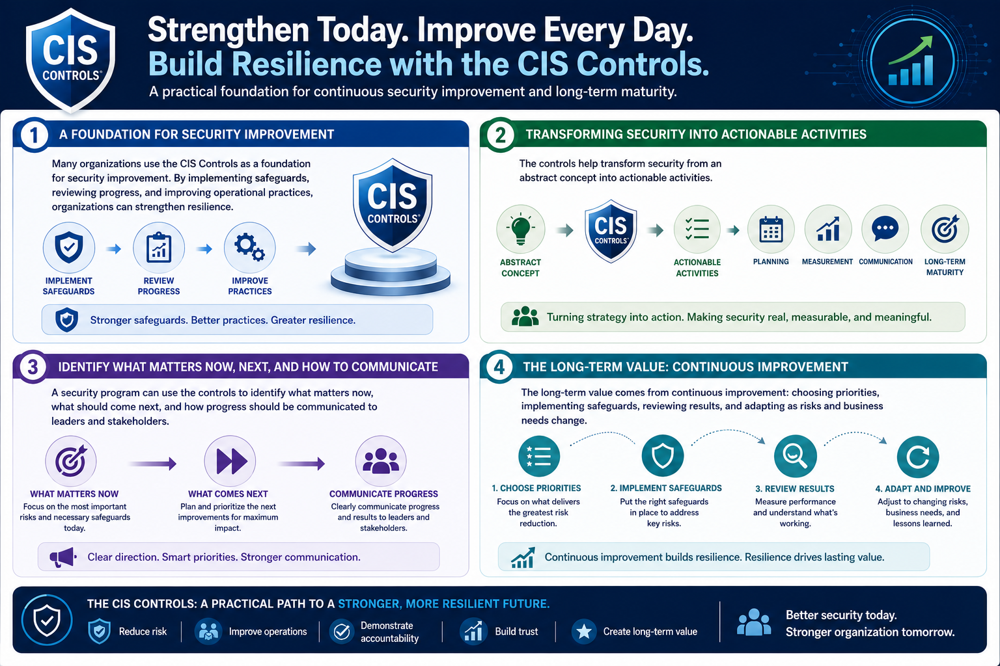

What Are the CIS Controls?
Building a Security Program with CIS Controls
Connecting to LMS... Progress: in progress
Version 1.0 | Date: 2026-06-16 | Educational guidance for understanding CIS Controls concepts.

Narration
Many organizations use the CIS Controls as a foundation for security improvement. By implementing safeguards, reviewing progress, and improving operational practices, organizations can strengthen resilience.
The controls help transform security from an abstract concept into actionable activities. That makes them useful for planning, measurement, communication, and long-term maturity.
A security program can use the controls to identify what matters now, what should come next, and how progress should be communicated to leaders and stakeholders.
The long-term value comes from continuous improvement: choosing priorities, implementing safeguards, reviewing results, and adapting as risks and business needs change.